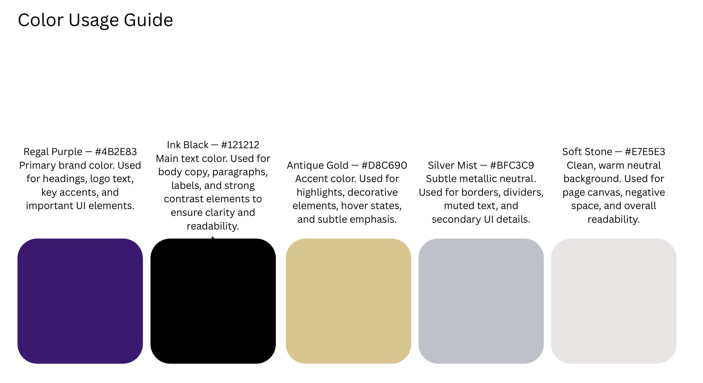
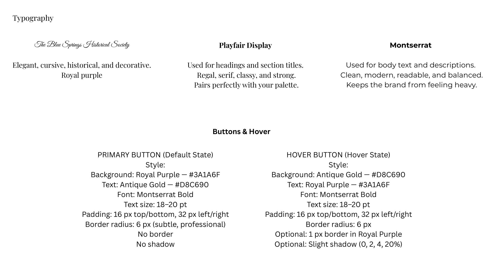
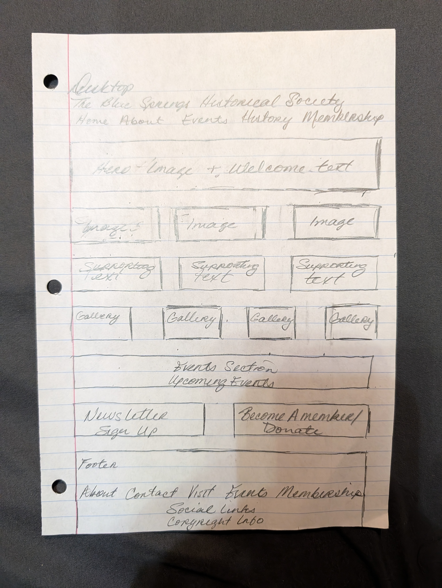
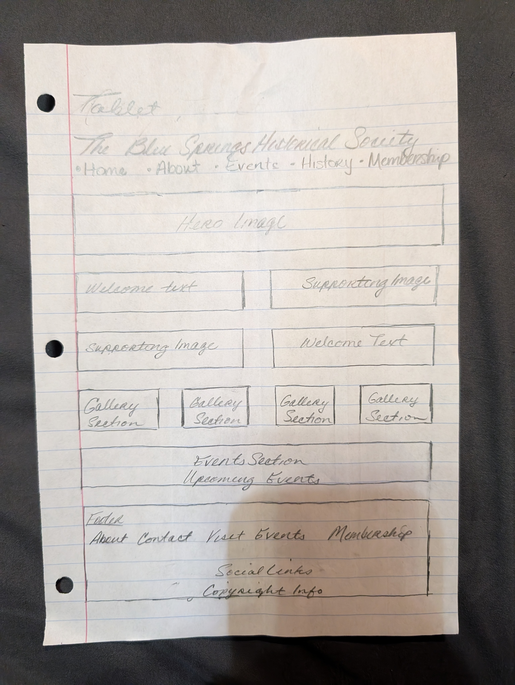
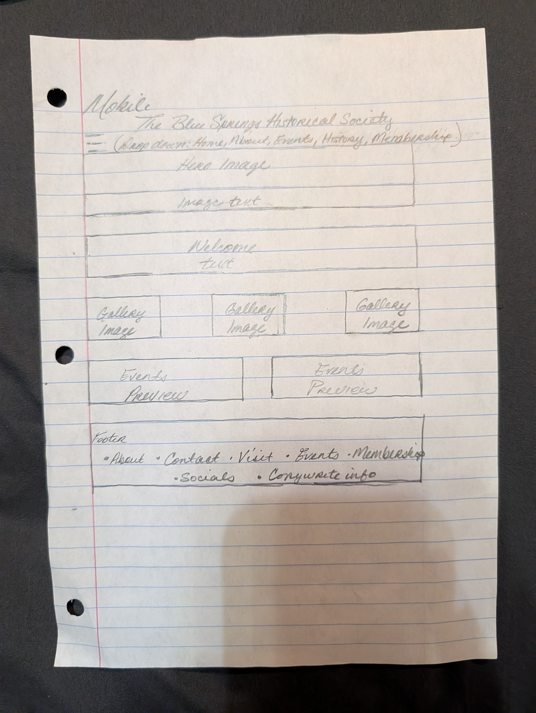

Project Process & Documentation
This Process Page presents the full documentation for the redesign of the Blue Springs Historical Society website. It includes the project topic, website audit, design brief, style guide, concept sketches, and formal wireframes. This page serves as a comprehensive record of the decisions, research, and design work completed for the final project.
Topic Description
The topic of this project is the redesign of the Blue Springs Historical Society website. The goal is to create a warm, historically inspired digital presence that reflects the organization’s mission while improving usability, accessibility, and clarity. The redesign focuses on readability, intuitive navigation, and a cohesive visual identity that honors the Society’s dedication to preserving local history.
Website Audit
Narrative
The original Blue Springs Historical Society website contains valuable information, but its presentation lacks cohesion and clarity. The navigation structure is functional but not intuitive, and users may struggle to locate key information quickly. While the site includes relevant content, the visual hierarchy is inconsistent, and the branding does not fully reflect the historical character of the organization.
The design elements feel outdated, with limited spacing, inconsistent typography, and minimal visual structure. The site is partially responsive, but several elements do not scale gracefully on mobile devices, resulting in cramped layouts and readability issues. Graphics and images are present but do not contribute to a unified aesthetic. Overall, the site provides essential information but lacks the polish, warmth, and accessibility expected of a modern nonprofit website.
The redesign addresses these issues by establishing a clear visual hierarchy, improving readability, strengthening branding, and creating a more intuitive navigation system. The new design emphasizes warmth, historical character, and accessibility while maintaining a clean, modern structure.
Site Map
Home
About
Events
Membership
Contact
Interface Inventory
- Navigation bar with five primary links
- Header logo and title
- Paragraph text blocks
- Section headings (H1–H4)
- Buttons and text links
- Footer with credits and navigation
- Images used for visual context
- Forms (contact form)
Design Brief
The objective of this redesign is to create a visually cohesive, historically inspired website that improves usability and accessibility. The target audience includes local residents, researchers, educators, and community members interested in historical preservation. The design goals include establishing a warm, archival aesthetic, improving navigation clarity, enhancing readability, and ensuring full responsiveness across devices.
Style Guide
The style guide defines the visual language of the redesign, including typography, color palette, spacing, and UI elements. These guidelines ensure consistency across all pages and reinforce the historical tone of the design.


Concept Sketches
Initial concept sketches explored layout ideas, navigation placement, and content hierarchy. These sketches focused on creating a warm, welcoming structure with clear sections and intuitive flow. While rough, they helped establish the foundation for the final wireframes.
Formal Sketches (Wireframes)
The formal sketches represent the finalized structure of the website across three responsive sizes: desktop, tablet, and mobile. These wireframes define content placement, spacing, and navigation flow before applying visual styling.
Desktop Wireframe

Tablet Wireframe

Mobile Wireframe
